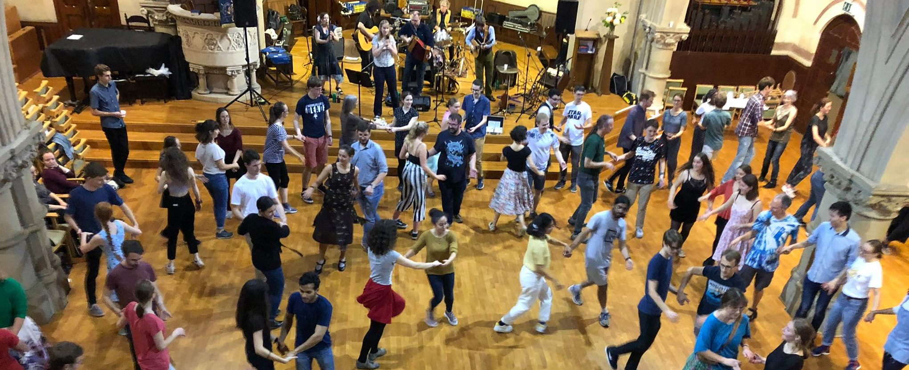
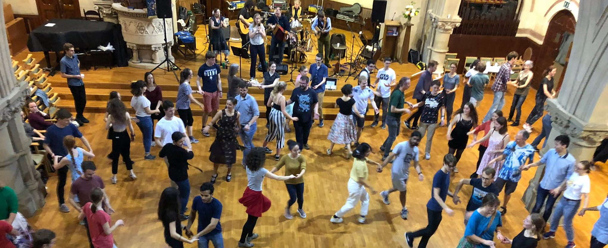
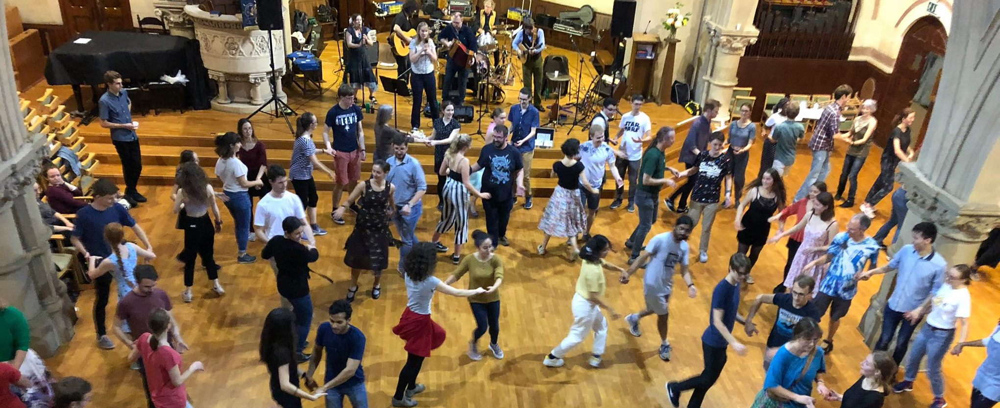
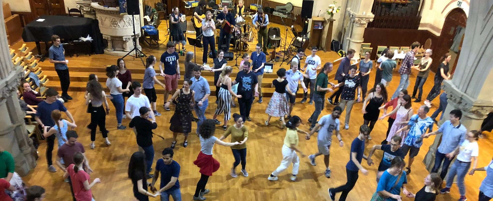

Ceilidh club is a brand new addition to the Cambridge folk scene, a weekly evening of dancing and live music. Dances will mostly be ceilidh and contra, plus whatever other stuff the caller fancies calling, but should be fun and accessible to relative beginners. Every other week the plan is that part of evening will be a taster workshop for a different style of dance (e.g. French, Scottish, clog, morris, etc), a bit like an IVFDF workshop. We’re hoping to form a scratch band to play for all this dancing (more info below), so you can participate as a dancer, musician, or both!
Tuesdays evenings 8-10.15pm in the back hall of the Wesley Methodist church (by Christ's Pieces).
Anyone! You don't have to be a student, and it doesn't matter if you have never done any folk dancing before, or just the occassional ceilidh, or you're an experienced dancer. We always aim to pick dances that are fun to dance but also accessible to newcomers. And the fortnightly workshops mean that there is always the chance to try something new.
We also welcome more musicians for our scratch band - click here for more details
Blah
Blah
Blah
Blah
Blah